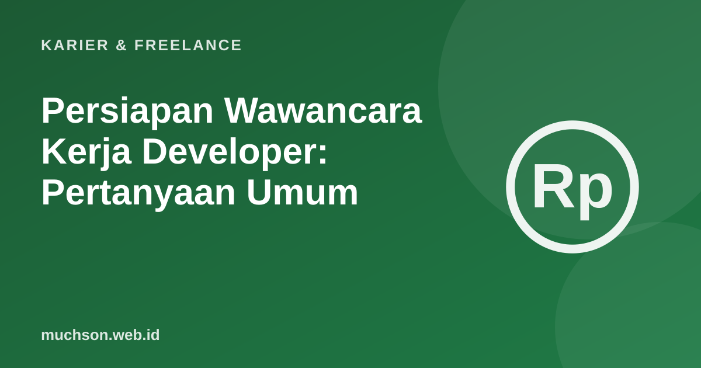

Beranda › Artikel › Karier & Freelance
Karier & FreelancePersiapan Wawancara Kerja Developer: Pertanyaan Umum
Wawancara adalah keterampilan yang bisa dilatih, terlepas dari seberapa jago Anda menulis kode. Struktur jawaban yang rapi dan persiapan yang tepat sering membedakan dua kandidat dengan kemampuan setara.

Tiga jenis pertanyaan
Kerangka STAR untuk pertanyaan perilaku
Menghadapi pertanyaan teknis
- Ulangi pertanyaan dengan kata Anda untuk memastikan paham.
- Pikirkan keras-keras. Pewawancara menilai cara berpikir, bukan hanya jawaban akhir.
- Mulai dari solusi sederhana, lalu perbaiki.
- Bahas kasus tepi dan kompleksitas.
- Bila buntu, tanya. Meminta petunjuk lebih baik daripada diam.
Daftar periksa persiapan
Tips
Pertanyaan yang Anda ajukan menunjukkan kualitas Anda. Tanyakan tentang cara tim bekerja, tantangan terbesar, dan bagaimana keberhasilan diukur pada peran ini.
Tanya jawab
Bagaimana menjawab pertanyaan gaji?
Riset kisaran pasar, tentukan angka yang masuk akal bagi Anda, dan sampaikan dengan percaya diri serta terbuka untuk berdiskusi.
Bagaimana bila saya gugup?
Berlatih dengan suara keras, bersama teman, atau rekam diri. Tarik napas, bicara pelan, dan terima bahwa sedikit gugup itu wajar.
Perlukah menyiapkan algoritma?
Bergantung perusahaan. Dasar struktur data dan kompleksitas sering ditanyakan. Cek tahapan seleksi yang dijelaskan perusahaan.